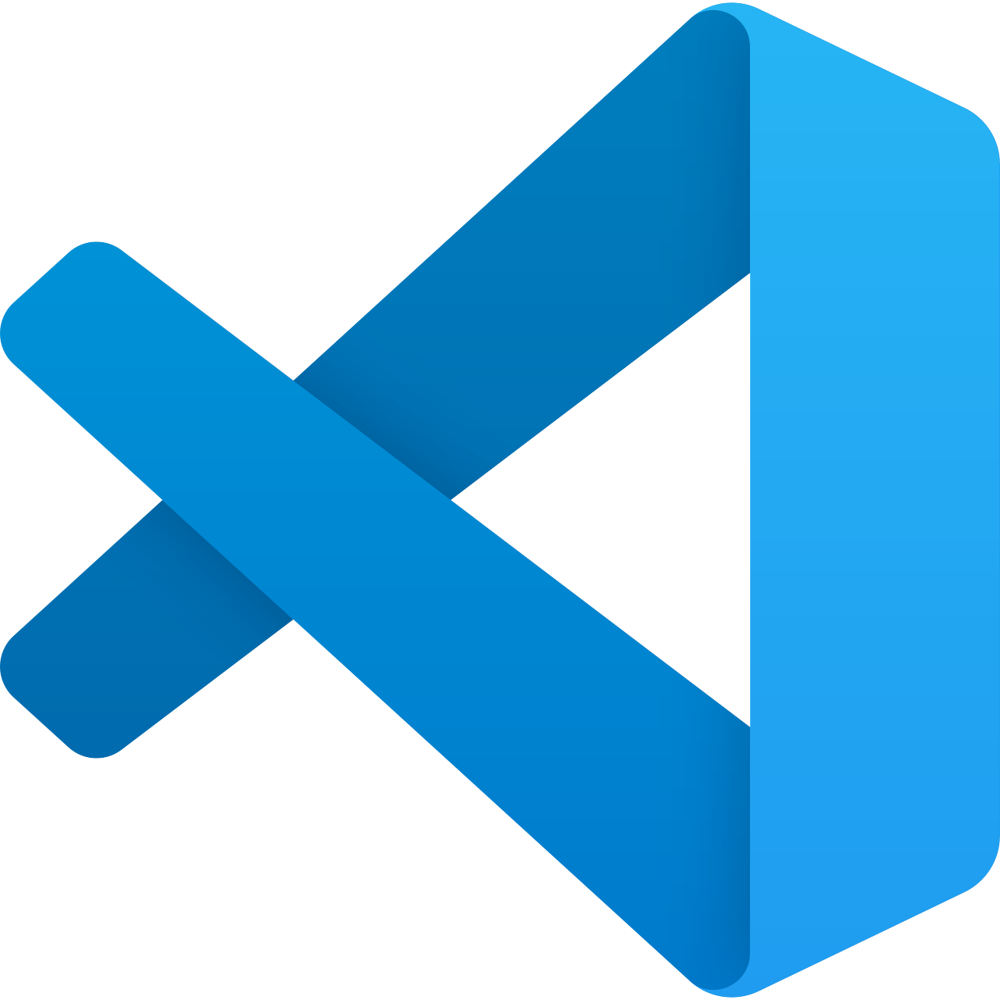

¿Quien soy yo?
Hola a todos,yo soy Gianlucas Miranda y soy un estudiante Tecnico Profesional en Programacion (TP) del Colegio Arturo Matte Larrain y en este proyecto de Visual Studio Code y GitHub, te mostrare algunas cosas sobre mi.
Hola a todos,yo soy Gianlucas Miranda y soy un estudiante Tecnico Profesional en Programacion (TP) del Colegio Arturo Matte Larrain y en este proyecto de Visual Studio Code y GitHub, te mostrare algunas cosas sobre mi.
Inicio
Mi historia
Formulario
Mis sueños
Las herramientas que use fueron Visual Studio Code y GitHub.
